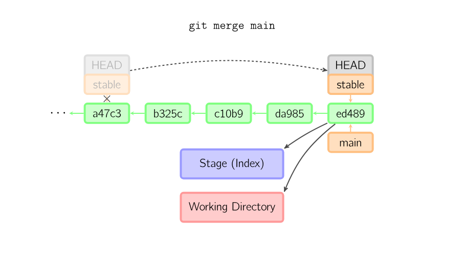
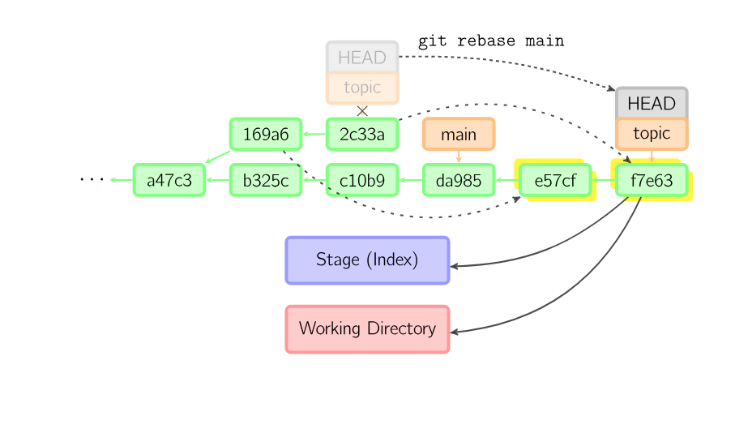

最近研究了很久git，因为此前一直在使用git最简单的做法，即git add . -> git commit -> git push，直接在main分支上工作。学习了很多别人的项目后意识到这样完全不适合多人协作，而且对一些错误操作的容错率也很不理想。因此，我决定重新学习适合自己的git工作流，并记录下来。
本文适合有基础git知识的朋友阅读。
我整合了三种适合个人项目和小型团队项目的工作流，并以脚本的形式提供。目前提供了通用性较强的bash脚本和我自己在使用的nushell脚本两种。
通常，git和github的默认分支是main（master和main的区别是什么？），你的git如果不是以main为默认分支名，可以通过以下命令修改：
git config --global init.defaultBranch main
对于一个极简的单人项目，如果项目没有构建、部署等需求（最常见的情况是作业文档、简单脚本等），那么项目仓库只有一个main分支是一个非常合理的事情，此时不要强求自己弄出多个分支，除了把自己弄得晕头转向外，不会从分支中获得过多的好处，因此不太建议。
对于一个相对正式的项目，如果主要由个人维护，那么可以在main分支之外开出一个dev分支，用于存放开发中的代码，在dev分支上完成开发后，将dev分支合并到main分支上。main分支上的代码总是稳定的，可以随时部署到生产环境，而dev分支上的代码是开发中的代码，可能不稳定，不应当用于构建和部署。
对于一个多人参与的、更为复杂的项目，仅有main和dev分支是不够的，多人在一个分支中工作会引入非常多的冲突，会导致混乱。此时我建议针对每个待开发的特性或故障修复开一个单独的分支（feat/xxx, fix/xxx, ...），尽量确保同一个开发分支内只有一个成员或尽量少的成员。
下面将针对这三种工作流展开来讲。
commit） 提交代码在各种工作流中没有任何区别，下面直接给出脚本：
# Run `cm` without args when you want to commit. It'll stage all changes and show diff.
# After checking diff, you can run `cm` again with a commit message to actually commit.
export def cm [message?: string] {
# Only allow commit on main branch if there's only one main branch.
if ((current-branch) == "main" and (branch-count) > 1) {
print "⚠️ Do not commit on main branch!"
return
}
if ($message == null) {
git add .
print "📝 All changes are staged. Diff:"
git diff --cached --numstat
| lines | parse "{added}\t{removed}\t{file}"
| rename "+" "-" "file" | print
git diff --cached | bat --style=grid --color=always
} else {
git commit -am $message
}
}
特别地，在多分支的工作流中，不能直接向main分支提交代码，main分支应当总是接受来自别的分支的合并。我的脚本的设计哲学是尽量把用户会犯的错误提前捕获，例如上面代码中当用户在当前分支为main、且有不止一个分支时提交代码会被直接拒绝，这有一点像Rust的理念。
如果只有一个main分支，commit后的工作就很直接：直接push到远程仓库即可。
export alias ps = git push -u origin HEAD
事实上这种简单的工作流根本不适合用脚本，VS Code等IDE其实挺方便的。
可以先创建一个dev分支：
export def dev [] {
if (has-branch 'dev') { # internal
git switch dev
} else {
input "📢 Create dev branch? (y/n): " | if ($in == "y") {
git switch main
git switch -c dev
}
}
}
开发功能之前，你的dev分支应当先与远程的分支保持同步：
export alias pl = git pull --rebase
接着你可以开始开发功能并提交代码。如果中途需要暂存到远端（比如要换个设备继续工作），只需要推送dev分支到远端即可。
功能开发完成并确保功能稳定后，可以合并到main分支：
# For some small personal projects, simply integrate current branch into main branch.
# Use it after you finish several commits on a branch.
# After this command, you may want to push both branches to remote.
export def inte [] {
let current = (current-branch)
if ($current == "main") {
print "❌ This action is not applicable to main branch. Switch to another branch first."
return
}
sync
git switch main
git merge $current --ff-only
$current
}
这里sync是一个自定义的命令，我们先省略其实现细节，过后再讲；我们切换到main分支后，仅使用fast-forward方式合并（--ff-only选项），用于将dev分支比main分支更新的部分合并到main分支上。这里有一个示意图（注意，此图中stable充当main分支，main分支充当dev分支）：

这种合并方式不会产生新的提交（commit），只会移动main分支的指针，使得提交记录更清晰。
合并后，可以将两个分支都推送到远程仓库。
这个工作流参考了哔哩哔哩博主码农高天的视频，他讲得非常详细和易懂。
和前面两种最大的差别在于，我们假设你不是项目的拥有者/维护者（owner/maintainer），不能直接向主分支贡献代码，而是需要打开Pull Request，请求合并到主分支。（什么是Pull Request？）
Fork原代码仓库后，你可以创建一个特性分支（feat/xxx）来开发新特性，或者创建一个修复分支（fix/xxx）来修复bug。开发完成后，将这个分支推送到自己的远程仓库。
📢 注意！如果在你开发期间，原代码仓库（上游代码仓库）主分支有新的提交，你的分支将无法与上游代码仓库合并！
该怎么做呢？这将是本文的一个难点，先看代码：
# Sync latest changes from main branch, and corporate into current branch.
# Now current branch is: latest main branch -> current branch changes.
# After this command, you may want to push current branch and open a pull request.
export def sync [] {
if not (is-clean) {
print "⚠️ Working directory is not clean. Please commit or stash your changes: "
git-status
return
}
let current = (current-branch)
if ($current == "main") {
print "📢 You are on main branch. This action will only update main branch."
}
# Sync remote fork from its parent.
gh repo sync (git remote get-url origin)
# Update main branch from origin.
git switch main
git pull --rebase origin main
# Rebase changes onto our current branch.
git switch $current
git rebase main
}
主要分三步走：
将原代码仓库（上游代码仓库）同步到你的Fork仓库中，这使用了gh CLI，详见文档。
更新本地的main分支到最新。
将当前分支的更改重新应用到最新的 main 分支上，确保当前分支的更改是最新的。🚀
这个变基的操作有一个示意图：

变基后，我们得到的分支如下（箭头表示先后顺序）：
旧main分支 -> 新main分支提交 -> 当前分支提交
完成后就可以把特性分支推送到自己的远程仓库，然后打开Pull Request请求合并到主分支了。
显然不是，这只是一个小型团队的工作流模型，对于一个成熟的企业或组织，有着相当多的细节需要处理，例如权限管理、代码审查、CI/CD等，这些内容超出了本文的范围，也很难拿出一个通用的解决方案。
学习本文将是你从一个git初级用户迈向中级用户的关键一步，希望能对你有所帮助！
master还是main？ 前面已经提到过，因为种族歧视的原因，现在github中master和main将会长期共存。我编写了一个函数返回当前的主分支：
export def master-or-main [] {
if (git branch | lines | each { |it| $it | str trim | str replace '* ' '' } | any { |it| $it == "main" }) {
return "main"
} else {
return "master"
}
}